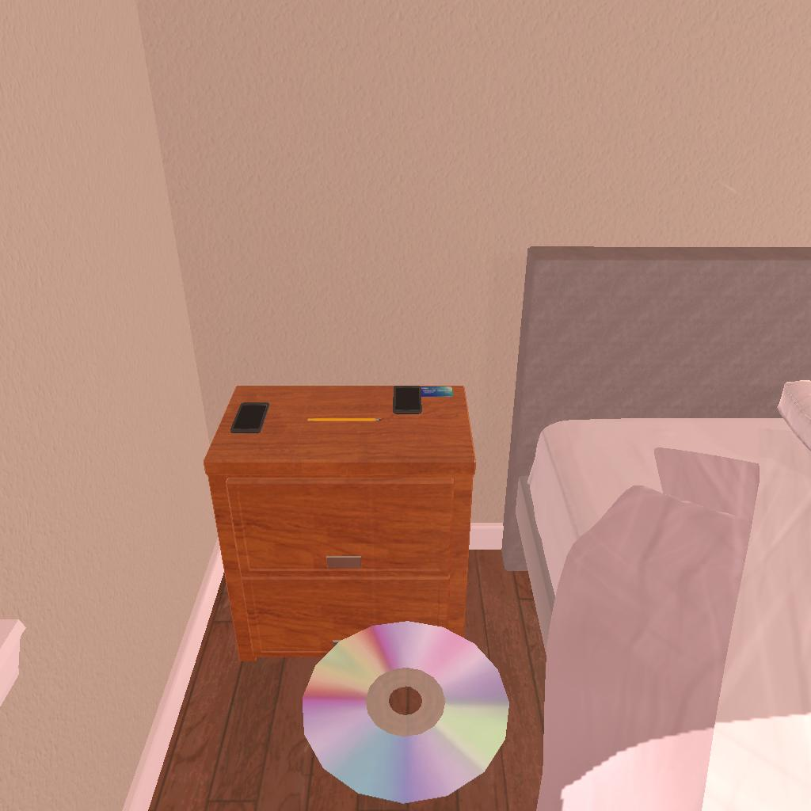

---------------------------------------------------------task: 6---------------------------------------------------------
--------------------------------------------------------------------------------------------------------------------------------------------------------------------
--------------------------------------------------------------------------------------------------------------------------------------------------------------------
Step:--------------------------------------------------------------------------9-------------------------------------------------------------------------------
----------------------------------------
VLM Prompt:
**Task**
Please perform as an embodied AI agent. Our final objective is to put some cd on safe. Below is the plan for completing the task, the current observation, alongside historical data and admissible actions for the next step. Please determine the best action for the next step!
**Plan**
Below is a detailed step-by-step plan to complete the task.
1. Find a CD.
2. Pick up the CD.
3. Find a safe.
4. Place the picked-up CD on the safe.
5. Find another CD.
6. Pick up the CD.
7. Return to the previously located safe.
8. Place the picked-up CD on the safe with the other CD.
**Current Observation**
Displayed is an image capturing the current position of the agent.
Objects in The Image: ['nightstand', 'smartphone', 'pencil', 'bed', 'compact disc']
**History Information**
Displayed are the previous observations with their corresponding actions.
State 0:
No history.
State 1:
1. Step Index in the Plan: Unknown
2. Objects: Smartphone, Credit Card, Bed, Wall
3. Action: go to desk 1
State 2:
1. Step Index in the Plan: 1
2. Objects: Tray, Mug, Digital Clock, Keys, Remote Control
3. Action: go to drawer 11
State 3:
1. Step Index in the Plan: Unknown
2. Objects: Drawer Chest, Wok, Spatula, Cup, Saucer, Sofa
3. Action: open drawer 11
State 4:
1. Step Index in the Plan: 2
2. Objects: Drawer Chest, CD (inside drawer 11)
3. Action: take cd 1 from drawer 11
State 5:
1. Step Index in the Plan: 3
2. Objects: CD, Drawer, Bowl, Cylinder Object, Couch
3. Action: go to safe 1
State 6:
1. Step Index in the Plan: 4
2. Objects: Safe, CD
3. Action: put cd 1 in/on safe 1
State 7:
1. Step Index in the Plan: 5
2. Objects: Safe, Bowl, Pen, Cup, Wooden Drawer, CD
3. Action: go to drawer 1
State 8:
1. Step Index in the Plan: 6
2. Objects: Compact Disc, Bedside Table
3. Action: examine cd 1
State 9:
1. Step Index in the Plan: 6
2. Objects: Compact Disc, Bedside Table
3. Action: put cd 1 in/on drawer 1
**Admissible Actions**
(1): go to bed 1
(2): go to dresser 1
(3): go to bed 2
(4): go to sidetable 1
(5): go to drawer 2
(6): go to sidetable 2
(7): go to drawer 3
(8): go to drawer 4
(9): go to desk 1
(10): go to garbagecan 1
(11): go to drawer 5
(12): go to drawer 6
(13): go to drawer 7
(14): go to drawer 8
(15): go to drawer 9
(16): go to drawer 10
(17): go to drawer 11
(18): go to safe 1
(19): open drawer 1
(20): close drawer 1
(21): put cd 1 in/on drawer 1
**Analysis Guideline**
1. Analyze the history and current observation, and then determine our current step in the plan and our current place.
2. List all visible objects related to the task in the current observation, without summarizing any as "various items."
3. Analyze the objects in the current observation based on the history and the requirements for the current step, and then determine if we can complete the step with the current observation.
4. Analyze and decide on the most appropriate action to take.
5. Summarize the analysis using the following format: "Analysis: [The summarization of the analysis], The Most Appropriate Action: (i which is the integer.): [Selected action]"
**Notes**
1. We must complete each step of the plan in order and cannot skip steps when the previous ones are not finished.
2. For "Go to" actions listed as "go to xxx [n]", interpret this as there are n distinct actions available: "go to xxx 1", "go to xxx 2", ..., "go to xxx n". Select one specific action from these options instead of using "go to xxx [n]".
3. If receptacles such as drawers, cabinets, and so forth are closed in the current observation, we may try to open them.
4. Pay attention to synonyms and ensure clarity in the terms used.
5. We must determine and provide the single action which must be in the **Admissible Actions**.
6. If there is no history available, we are at the first step and the current place is "Unknown".
**Answer**
Please select the most suitable action by following the **Analysis Guideline**, keeping the above **Notes** in mind.
----------------------------------------
----------------------------------------
VLM Response:
Analysis: The current step in the plan is to pick up the second CD, which corresponds to step 6 in the detailed plan. Based on the current observation, the agent is in a room where a compact disc is visible on the floor near a nightstand. There is also a smartphone, pencil, bed, and the nightstand itself visible in the current observation. According to the history, the previous action was to put the first CD in or on drawer 1, which was step 6 of the plan. However, the CD appears to be on the floor instead of inside or on the drawer, indicating a deviation from the expected sequence of actions. Since the CD is visible and within reach, the agent can proceed to pick it up, which aligns with step 6 of the plan. There is no "pick up CD" action listed in the admissible actions, but the history indicates that examining the CD was the action taken before attempting to place it in the drawer, which suggests that "examine cd 1" may be a precursor to picking it up. Therefore, the most appropriate action to take next is to examine the CD again, as it seems to be the required step before picking it up.
The Most Appropriate Action: (4): go to sidetable 1
----------------------------------------
----------------------------------------
>>> Refine VLM Response and Get Pure Action: go to sidetable 1
----------------------------------------
-----------------------------------------------------------------
Running time: 16.93291211128235 seconds
Total Money: 0
-----------------------------------------------------------------
-----------------------------------------------------------------
Summarization Prompt:
**Context**
Analysis: Since there is no history information, we are at the first step in the plan, which is to find a statue. The current place is unknown. In the current observation, we see a floorlamp next to an armchair with a small table that has a small object on it, which could potentially be the statue we are looking for. Since the plan requires us to find a statue first and it appears there might be one on the table next to the armchair, we should investigate this object to determine if it is the statue we need.
The Most Appropriate Action: (1): go to armchair 1
**Summary**
1. Step Index in the Plan: 1
2. Objects: Floorlamp, Armchair, Small Table, Small Object (potential statue)
3. Action: go to armchair 1
**Context**
Analysis: The current step in the plan is to pick up the second CD, which corresponds to step 6 in the detailed plan. Based on the current observation, the agent is in a room where a compact disc is visible on the floor near a nightstand. There is also a smartphone, pencil, bed, and the nightstand itself visible in the current observation. According to the history, the previous action was to put the first CD in or on drawer 1, which was step 6 of the plan. However, the CD appears to be on the floor instead of inside or on the drawer, indicating a deviation from the expected sequence of actions. Since the CD is visible and within reach, the agent can proceed to pick it up, which aligns with step 6 of the plan. There is no "pick up CD" action listed in the admissible actions, but the history indicates that examining the CD was the action taken before attempting to place it in the drawer, which suggests that "examine cd 1" may be a precursor to picking it up. Therefore, the most appropriate action to take next is to examine the CD again, as it seems to be the required step before picking it up.
The Most Appropriate Action: (4): go to sidetable 1
Please summarize the context by following above examples when providing the summary, and ensure that only the summary is included, without any extra explanation.
**Summary**
-----------------------------------------------------------------
-----------------------------------------------------------------
Summarization Response:
1. Step Index in the Plan: 6
2. Objects: Compact Disc, Nightstand, Smartphone, Pencil, Bed
3. Action: go to sidetable 1
-----------------------------------------------------------------
-----------------------------------------------------------------
Text Observation:You arrive at loc 3. On the sidetable 1, you see a cellphone 1, and a cellphone 2.
-----------------------------------------------------------------
UNSUCCEED